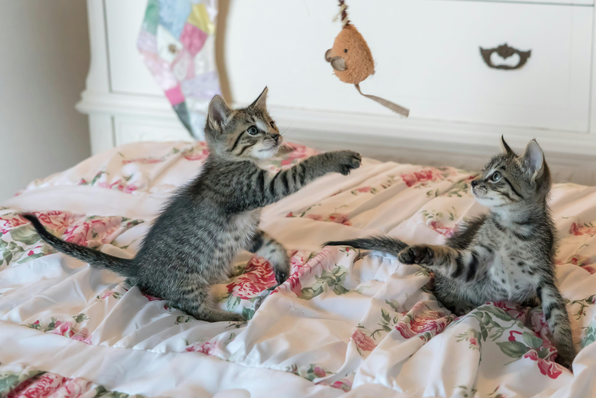
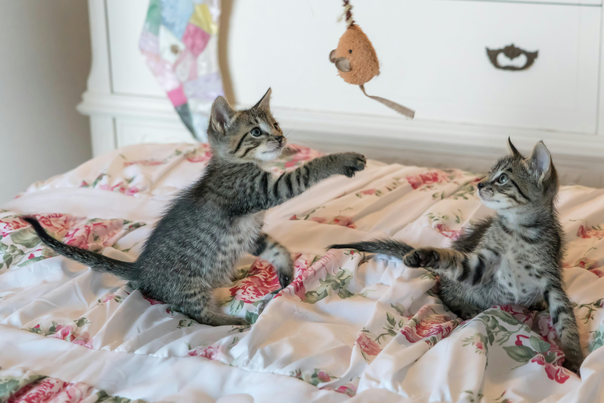

The domestic cat is usually a small furry animal with attitude, 4 legs, sharp claws, teeth and a tail. It can be an indoor or outdoor pet. It tolerates some humans that will meet its need of food, water and shelter. It can bite and/or claw without provocation. Its very good at hiding, and that will be my blog for today.
Pictures of cats


 

fun facts about cats
Cats are believed to be the only mammals who dont, taste sweetness. Cats are nearsighted, but their peripheral vision and night vision are much better than that of humans. Cats are supposed to have 18 toes (five toes on each front paw; four toes on each back paw). Cats can jump up to six times their length. Cats, claws all curve downward, which means that they can,t climb down trees head-first. Instead, they have to back down the trunk. Cats, collarbones don,t connect to their other bones, as these bones are buried in their shoulder muscles. Cats have 230 bones, while humans only have 206. Cats have an extra organ that allows them to taste scents on the air, which is why your cat stares at you with her mouth open from time to time.